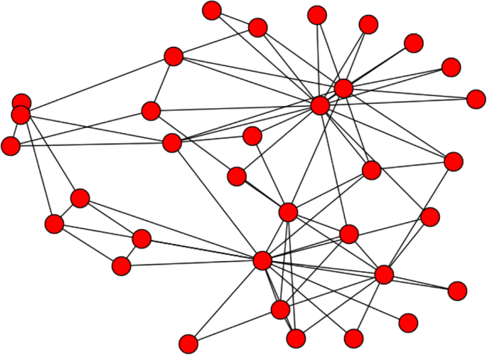

Thanks to the two students who worked with me on this study of one student’s solution to the Bertin exercise. This study is more detailed than what I expected you to do in class but serves to illustrate the process.
bertin exercise example
The Invariant
The invariant is represented by the title
The components
The components are the things that vary in the graphic
Retinal Variables
The retinal variables are the things that form an image on our retinas
Bertin’s Theory
It should not be surprising that information design owes so much to a cartographer. This is one of two fields, the other being social network analysis, with the most influence on building information containers today. The remaining sections of this chapter explore Bertin’s theory of information graphics.
Theories
The word theory is used to mean many things. To obtain a useful definition, it might be helpful to consider what Stephen Hawking says about theory in A Brief History of Time on page 7.
Note that Hawking is giving what we might call a normative definition, telling us what a theory should be. There might be plenty of things parading around under the theory banner that could be classed as bad theory. Note also that Hawking requires that a theory both describe and predict. Bertin does both of these things, with a detailed description of graphical information and using a concept called efficiency to predict outcomes.
Efficiency
Bertin defines efficiency as a measure of how quickly the process of reading a graphic can be completed and defines the process in some detail under the influence of (then) contemporary philosophy. Let’s read some information graphics now to get an idea of what this might entail.
Categories of information graphics
Bertin describes four categories of graphics: diagrams, networks, maps, and symbols. It is the use of the last three categories, coupled with the detail in Bertin’s theory, that persuade me that here is a good foundation for describing information architecture.
Symbols
Diagrams
Networks

Maps
Simplification
Recall my earlier question about adjuncts to efficiency. The main adjunct in my opinion is an exhaustive depiction of what it means to simplify information using retinal variables at the most detailed level possible.
A Picasso nude exemplifies simplicity
Example: Swim lane diagrams
Visual Design of Information
Different perspectives drive different views
When we analyze what people see, we bring a perspective, in part based on where we are and what we do. Think about some bases for your perspective on the visible variables in presenting information, such as professional, cultural and biological.
An important perspective
When art critics get together they talk about Form and Structure and Meaning. When artists get together they talk about where you can buy cheap turpentine.
— Pablo Picasso
quoted by Steve McConnell, Code Complete (1993)
Another perspective
Modern philosophers have had little to say about the nature of aesthetic interest; … The concentration has been on the philosophy of art, and in particular on puzzles created by boring impostors like Duchamp: is this signed urinal a work of art? etc. This makes for an exceedingly dull literature, devoted to questions which can be answered in any way while leaving everything important exactly as it is.
—Roger Scruton, Modern Philosophy (1994), p. 589
Essence
Several famous pictures in the twentieth century illustrate the quest to depict the essence of things. The difficulty of doing so and the effort required to see the essence before depicting it can be found in a series of lithographs created by Picasso in a short period of time. There are essays about this series available online and many versions of pictures of them. This particular version is chronologically read first from left to right then top to bottom.
Picasso’s Bull Lithographs
More on Essence
There are many ways to interpret the word essence in the above series and I leave that to the essays mentioned above, that discuss the bull as the essence of masculinity or of Spain itself. Let me just add this proposed Olympics poster, undoubtedly influenced by Picasso in particular and Cubism in general.
Gestalt principles
proximity: proximate images form a group
similarity: similar images form a group
closure: perception completes images that appear to have missing parts